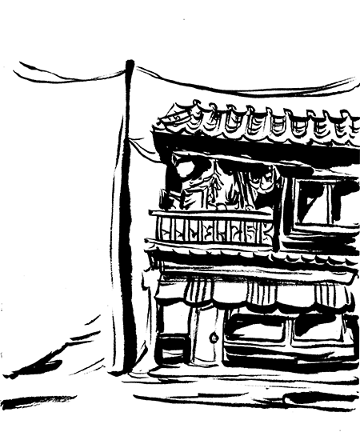
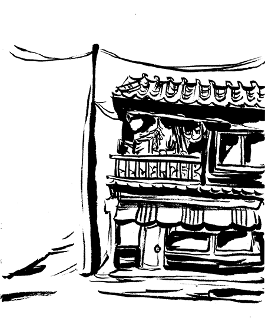
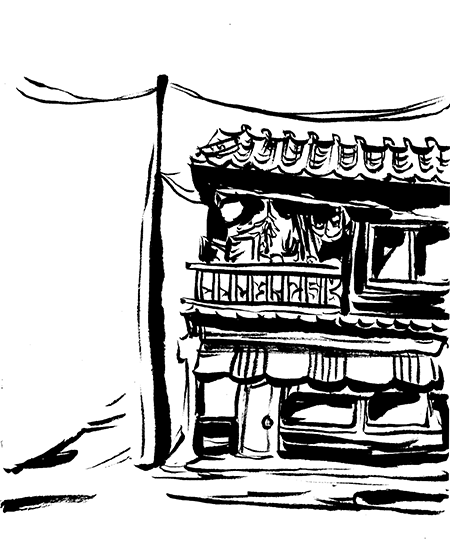

my work.
about
sketchbook
Ongoing. On sketchbook #6.
Watercolor, ink.

Here are some fun snipperts from my sketchbook. I have participated in Inktober for two years now. Most of my visual interests lie in creating surreal images and incorporating architecture with natural elements.
© Katherine Sang, 2019


 
